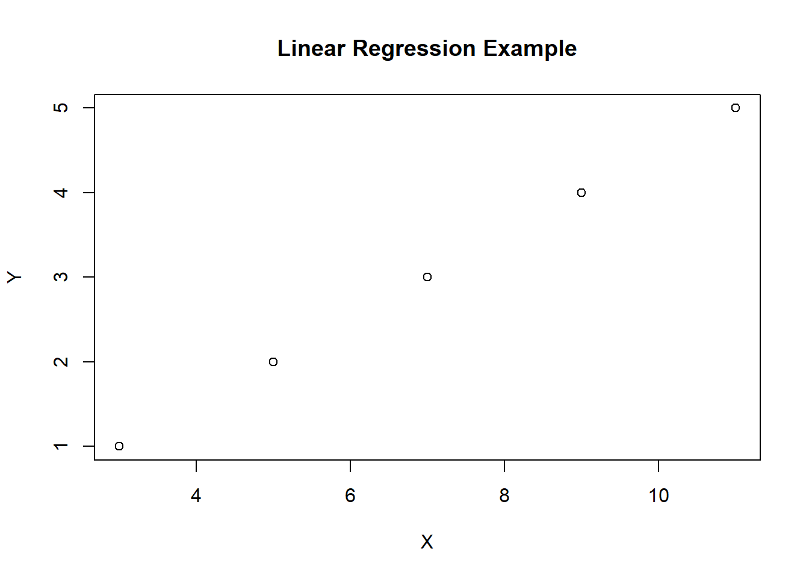
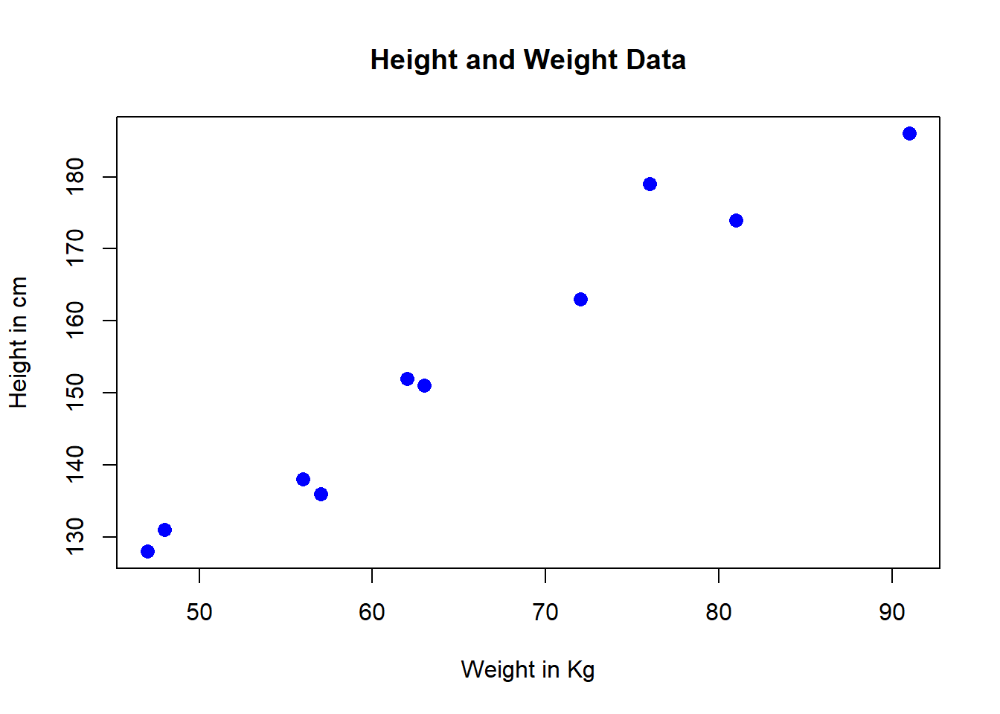
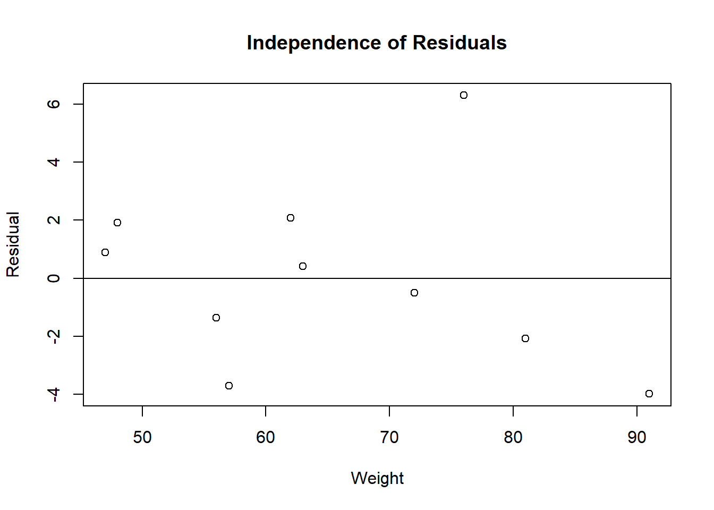

X = c(3, 5, 7, 9, 11)
Y = c(1, 2, 3, 4, 5)
plot(X,Y, title("Linear Regression Example"))
Linear regression is a form of predictive modeling almost everyone has seen in some capacity or another. The general idea is that given a series of data, you assign one of them to be the independent variable (Y) and the dependent variable (X). You try to predict the value of Y given the value of X. Here is an example.
The equation for the typical linear regression is \(\bar{Y} = \beta_0 + \beta_1x_1 + \epsilon\). Where Y is estimated by \(\bar{Y}\), and \(\beta_1\) is the coefficient of x, and \(\beta_0\) is the Y intercept.
To find \(\beta_1\) and \(\beta_0\), you can use either gradient descent, linear algebra, or the statistical method. We will focus on the statistical method for now.
\[ \beta_0 = \frac{(\sum y)(\sum x^2) - (\sum x)(\sum xy)}{n(\sum x^2)-(\sum x)^2} \\ \beta_1 = \frac{n(\sum xy) - (\sum x)(\sum y)}{n(\sum x^2) - (\sum x)^2} \]
This will provide the optimal values for the intercept and the slope.
All statistical models come with assumptions. It is important to know them, otherwise you risk giving inaccurate results.
So how ‘good’ is our linear regression? This can be a tough question to answer in many cases. For linear regression there’s a few commonly sourced methods, but the \(R^2\) method is the most prevalent, although many would dispute whether or not it should be.
\[ R^2 = 1 - \frac{\sum (y_i-b_0-b_1x_i)^2}{\sum (y_i-\bar{y_i})^2} \] The \(R^2\) is measured between 0 and 1, with 1 being a perfect match and 0 being a complete mismatch. The \(R^2\) explains the amount of variation that is captured by the developed model.
In R, doing a linear regression is very simple. Many people have done this same technique in other programming languages, and even in excel and other tools.
In this example, we will be predicting weight based on height. Some sample data from Tutorialspoint.com is provided below.
height <- c(151, 174, 138, 186, 128, 136, 179, 163, 152, 131)
weight <- c(63, 81, 56, 91, 47, 57, 76, 72, 62, 48)
plot(weight, height, col="blue", main = "Height and Weight Data",
abline(lm(weight~height)), cex = 1.3, pch = 16, xlab = "Weight in Kg", ylab = "Height in cm")
\[ weight = -38.4551 + height * 0.6746 \] From a quick look at our plot we have no reason to contest the linear relationship. Now lets check our residuals.
expected = -38.4551 + height * 0.6746
df = data.frame(height, weight, expected)
df$residual = expected - weight
print(df) height weight expected residual
1 151 63 63.4095 0.4095
2 174 81 78.9253 -2.0747
3 138 56 54.6397 -1.3603
4 186 91 87.0205 -3.9795
5 128 47 47.8937 0.8937
6 136 57 53.2905 -3.7095
7 179 76 82.2983 6.2983
8 163 72 71.5047 -0.4953
9 152 62 64.0841 2.0841
10 131 48 49.9175 1.9175plot(df$weight, df$residual, abline(h=0), xlab = "Weight", ylab = "Residual", main = "Independence of Residuals")
There does not appear to be any particular patterns in the residuals.
In this case, our output should create some caution. The sample size here is too small to create a convincing normal distribution, although you can see the mean is close to 0. This would indicate that you should in fact seek more more data, a new model, or to use this model only under careful watch.
And finally for homoscedasticity, we look to the original plot of the data and see that there is no major ‘megaphoning’ of the data, but again with this small of a dataset, it can be very hard to tell.
Now that we have determined this model is accurate enough for our needs, barring our one questionable assumption, we will test its \(R^2\). This is best done in R using the built in packages. Below we can see the \(R^2\) is 0.9548 which is pretty good! You can also see a variety of other metrics around our data below.
Call:
lm(formula = weight ~ height)
Residuals:
Min 1Q Median 3Q Max
-6.3002 -1.6629 0.0412 1.8944 3.9775
Coefficients:
Estimate Std. Error t value Pr(>|t|)
(Intercept) -38.45509 8.04901 -4.778 0.00139 **
height 0.67461 0.05191 12.997 1.16e-06 ***
---
Signif. codes: 0 '***' 0.001 '**' 0.01 '*' 0.05 '.' 0.1 ' ' 1
Residual standard error: 3.253 on 8 degrees of freedom
Multiple R-squared: 0.9548, Adjusted R-squared: 0.9491
F-statistic: 168.9 on 1 and 8 DF, p-value: 1.164e-06